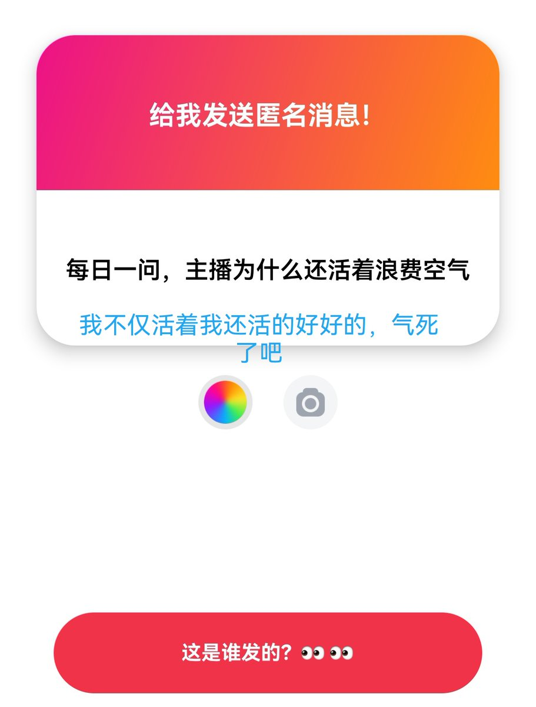

real
@real39715698
我知道你 你是那种在现实里完全没有人和你说话 你只能在网络上像只阴暗的老鼠一样躲在这种匿名的角落里攻击一个和你一点交集都没有的女孩子 以此博得别人的注意力 这样让你有一种隐秘的成就和快感 真的是太可怜了

real
@real39715698
哎我说大哥哥你是不是暗恋我？骂了一次你之后你反而还缠上我了 我也是闲得慌每天还理你 我都告诉你了你把这个软件一删手机一砸我就死了 行吗 以后你自己自娱自乐单机给我发这个吧 我鸟都不鸟你 https://t.co/YXWajokR35